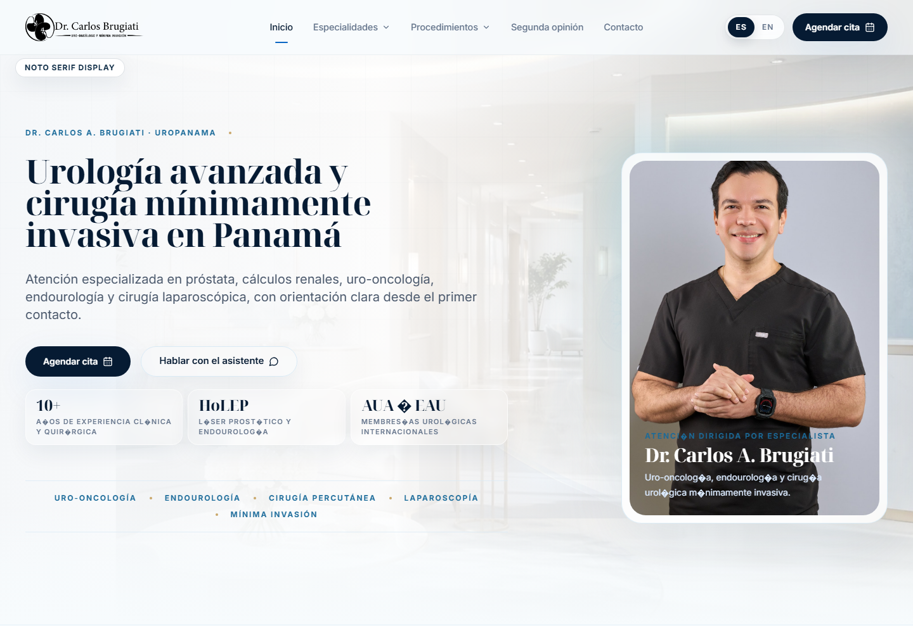
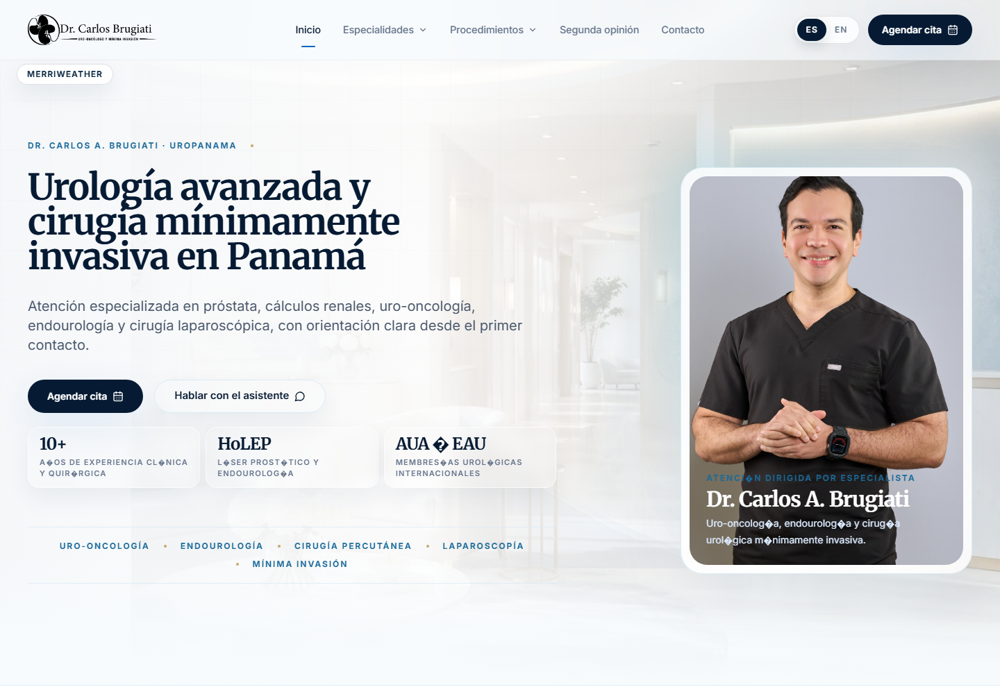
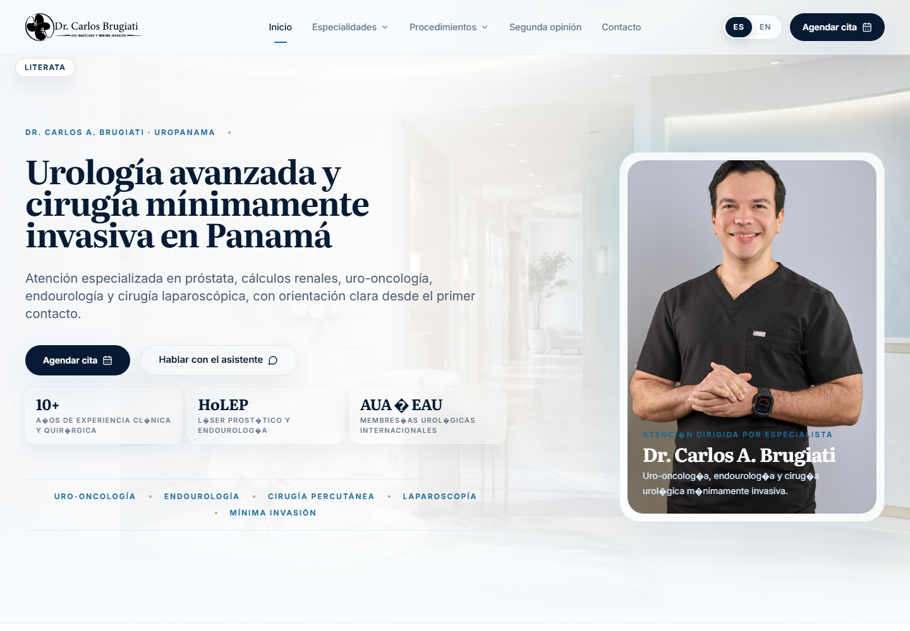
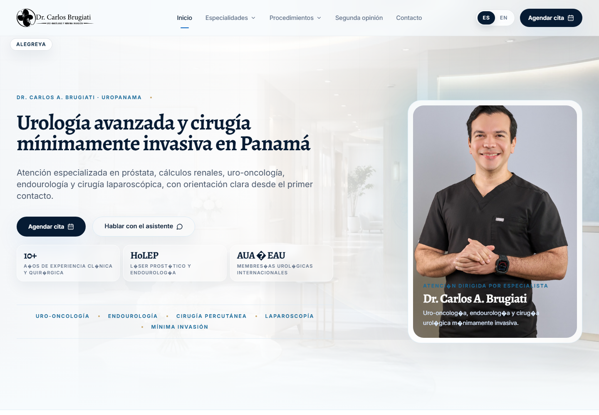
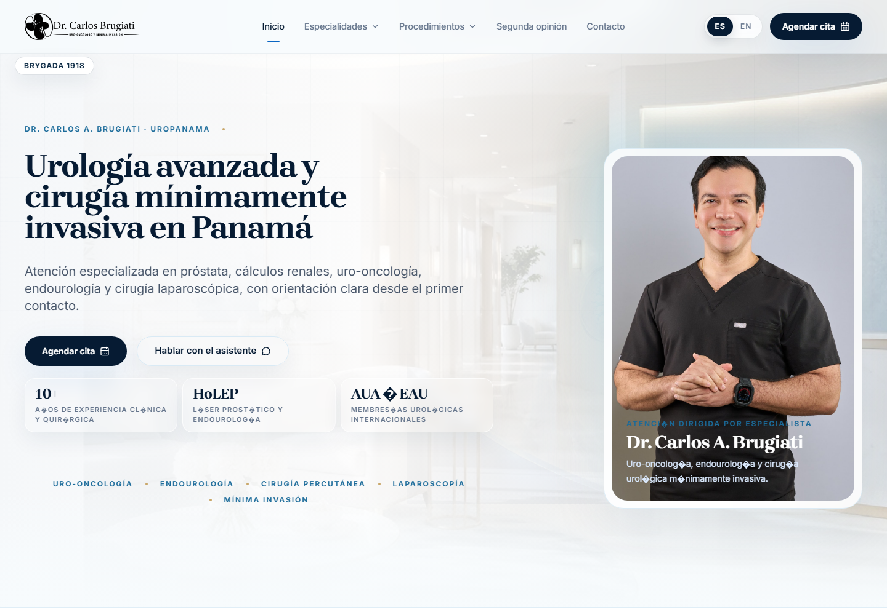
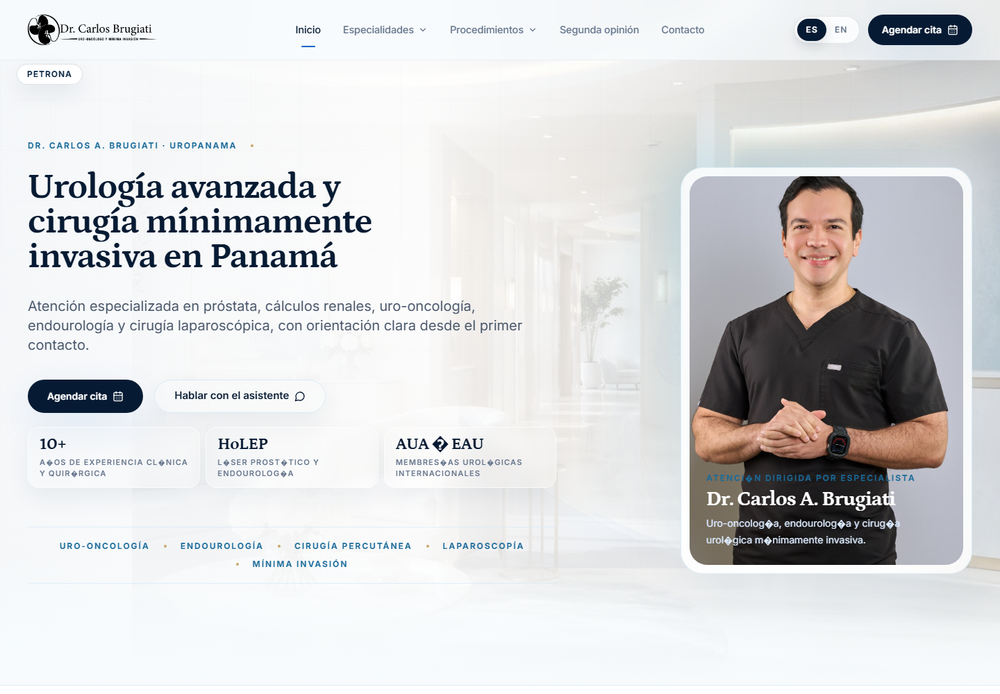
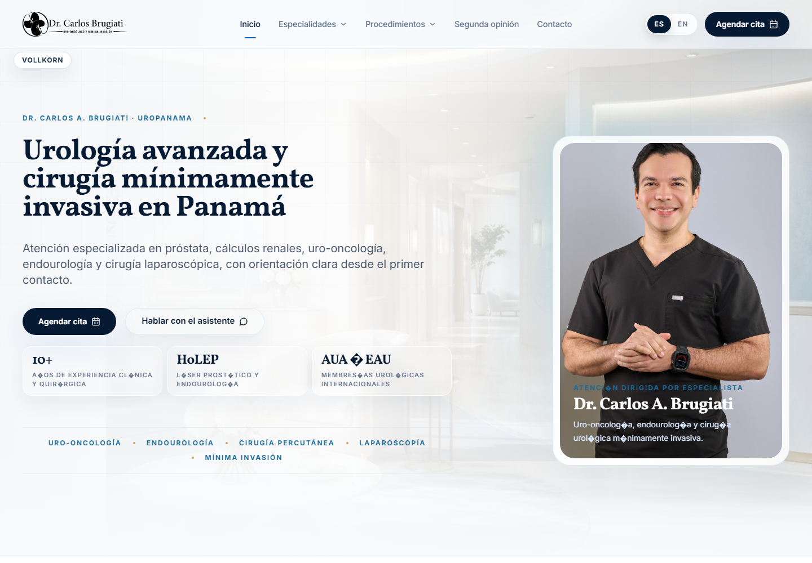
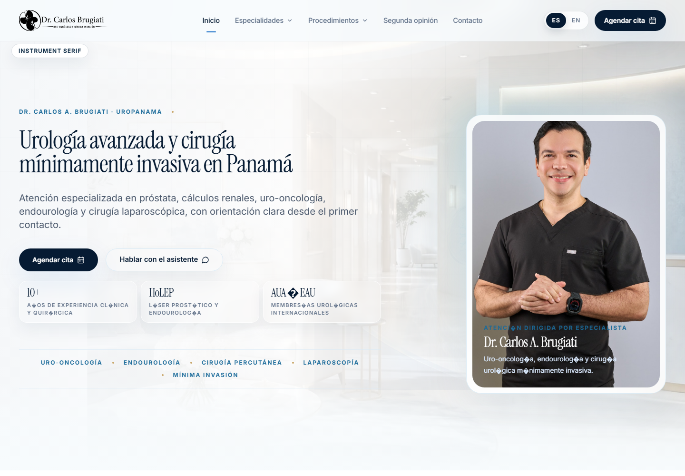

Headline Font Previews - Set 2
More restrained, healthcare/editorial options tested on the current homepage. These are previews only.








More restrained, healthcare/editorial options tested on the current homepage. These are previews only.







